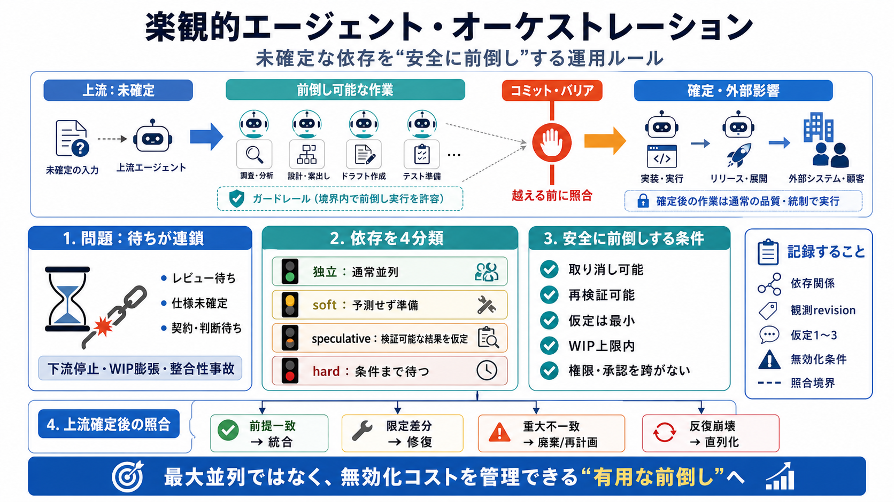

7 Real-World Agentic AI Examples Driving ROI in 2026
Tight integration with development environments, testing frameworks, and CI/CD pipelines allows agents to operate within…

Tight integration with development environments, testing frameworks, and CI/CD pipelines allows agents to operate within…
Intent's Coordinator Agent analyzes the codebase, drafts the living spec, generates tasks, and delegates to six agents: …
When agents run in parallel, you need a strategy for concurrent state access. Optimistic concurrency attaches a version…
| Group chat | Conversational pipeline. Agents contribute to a shared thread. | Chat manager controls turn order. | Cons…
1. Developers define specialized agents and their dependencies in code: Data Retrieval Agent – collects customer a…